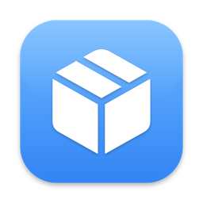

Container Desktop uruchamia stacki docker-compose.yml na CLI container od Apple, które samo nie obsługuje compose. Aplikacja parsuje YAML i tłumaczy każdą usługę na zwykłe wywołanie container run — bez dodatkowego demona i ukrytego stanu. Otwórz przez Kontenery → Compose, wklej YAML i kliknij Uruchom.
Dla każdego projektu aplikacja:
name: albo pole w dialogu),depends_on, streamując ich wyjście na żywo,compose.project / compose.service, dzięki czemu na liście pojawiają się zgrupowane ze zbiorczym start / stop / usuń.| Klucz | Uwagi |
|---|---|
image | Wymagany. build: nie jest wspierany — wskaż gotowy obraz. |
container_name | Nadpisuje domyślną nazwę <projekt>-<usługa>. |
command / entrypoint | String lub lista. Wieloczłonowe entrypointy (np. ["dotnet", "dbmgr.dll"]) są tłumaczone poprawnie. |
environment | Forma mapy lub listy. |
ports | Składnia krótka ("8080:80", opcjonalnie /udp) i długa. |
volumes | źródło:cel[:ro]; nazwane wolumeny muszą już istnieć. |
mem_limit / cpus | Limity zasobów VM (także deploy.resources.limits). Domyślnie 1 GB — pamięciożerne zadania init (np. zasiewanie bazy) zwykle potrzebują mem_limit: 4g. |
depends_on | Lista lub mapa (warunki inne niż service_started są ignorowane z ostrzeżeniem). |
x-init | Rozszerzenie Container Desktop — zobacz Zadania x-init. |
Użyj nazwy host.containers.internal w wartościach environment albo w command, aby z wnętrza kontenerów dotrzeć do Twojego Maca (odpowiednik dockerowego host.docker.internal).
environment:
DB_SERVER: "host.containers.internal,1433" # SQL Server działający na hościeDlaczego alias zamiast IP: każdy projekt compose dostaje własną sieć vmnet z własną podsiecią, więc adres bramy (hosta) różni się między projektami i może się zmienić po restarcie usługi container (np. 192.168.64.1 vs 192.168.65.1). Aplikacja odpytuje sieć projektu zaraz po utworzeniu i podmienia alias na właściwy adres bramy — mapowanie widać w logu postępu.
0.0.0.0), nie tylko na 127.0.0.1, żeby być osiągalna z podsieci vmnet. Porty publikowane przez inne projekty Container Desktop albo przez Docker Desktop na hoście są osiągalne tą samą drogą.Usługi widzą się nawzajem po nazwie kontenera — np. przy domyślnym nazewnictwie usługa server w projekcie shop to shop-server:
environment:
API_URL: "http://shop-server:22000"container 1.0.0 ma wbudowany resolver DNS nazw kontenerów, ale ten nigdy nie trafia: nazwy rejestrowane są bez końcowej kropki FQDN, a zapytania DNS przychodzą skanonizowane — każde wyszukiwanie kończy się SERVFAIL. Container Desktop to obchodzi: po starcie każdej usługi aplikacja odczytuje jej IP i wymienia wpisy /etc/hosts między wszystkimi usługami projektu (log postępu pokazuje każde mapowanie).
Oznacz usługę x-init: true, aby uruchomić ją jako zadanie jednorazowe — np. utworzenie bazy danych tym samym obrazem, ale innym entrypointem. Zadania init wykonują się przed wszystkimi zwykłymi usługami, sekwencyjnie i do końca; usługi startują dopiero, gdy każde zadanie init zakończy się sukcesem.
services:
dbinit:
image: registry.example.com/server:1.0
x-init: true
entrypoint: ["dotnet", "dbmgr.dll"]
command: create mydb --sqlserver "host.containers.internal,1433" --recreate
server:
image: registry.example.com/server:1.0
# startuje dopiero, gdy dbinit zakończy się kodem 0build: nie jest wspierany — najpierw zbuduj obraz (dialog Zbuduj w aplikacji) i wskaż go tagiem.healthcheck, restart, profiles i inne nieobsługiwane klucze są ignorowane — każdy z ostrzeżeniem przy parsowaniu, nigdy po cichu.depends_on czeka na start zależności, nie na jej gotowość. Jeśli usługa łączy się z zależnością przy starcie i nie ma retry, zrestartuj ją przyciskiem ↻.volumes: nie tworzą wolumenów automatycznie — utwórz nazwane wolumeny w zakładce Wolumeny.0.0.0.0 i czy używasz host.containers.internal zamiast localhost (w kontenerze localhost to sam kontener)./etc/hosts.Permission denied — obrazy działające jako nie-root nie mogą bindować portów uprzywilejowanych; nasłuchuj na wysokim porcie (np. 8080) i publikuj 60000:8080.container (okna 5 min / 30 min / 1 h).← Container Desktop · GitHub · MIT